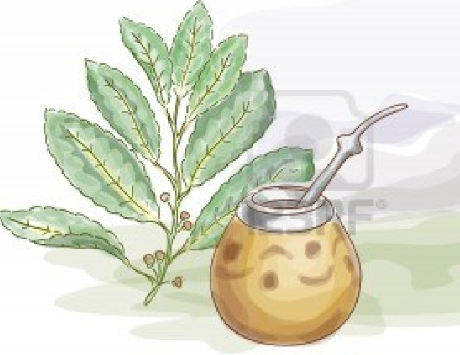
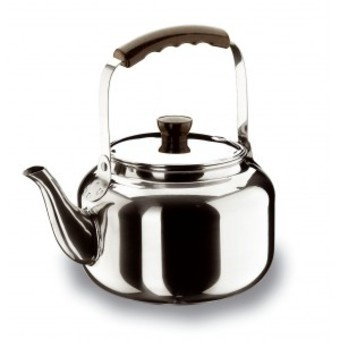

El Mate
 

Para hacerse amigo o acompañar la soledad
Si bien no es una costumbre exclusivamente argentina sino compartida con algunos otros pueblos de América del Sur, ha tenido y aún conserva gran difusión en Argentina. La zona de cultivo de la yerba mate se halla restringida a Paraguay, sur de Brasil y nordeste de Argentina (donde la provincia de Misiones concentra el 90% del cultivo), por lo que es considerada planta nacional y regional.
La infusión se prepara en una forma que la distingue del resto de esa clase de bebidas. En un calabacín hueco se pone yerba, a veces un poco de azúcar y con una pava (utensilio de metal con pico vertedor) se vierte agua caliente. Se absorbe con una especie de tubo metálico (bombilla) que en su parte inferior tiene orificios que impiden el paso del polvo de yerba. Es una infusión muy concentrada debido a la escasa cantidad de agua en relación con la de yerba. El agua va reponiéndose, no así la yerba que dura varias infusiones, en especial si es de buena calidad. Cuando el conocedor detecta la necesidad de renovar la yerba, se cambia parcialmente la que venía utilizándose, por yerba fresca.
El mismo recipiente con su bombilla o cañita pasa de mano en mano y de boca en boca.
Se ha afirmado que el gaucho podía recorrer alrededor de 180 kilómetros por día si disponía de un trozo de asado y abundante mate; en la proporción inversa producía efectos negativos en su conducta. Esta bebida produce efectos excitantes en la red ganglionar y cerebro espinal.
Cebado del mate
El agua debe estar caliente pero sin llegar a hervir.
Al colocar la yerba, conviene golpear suavemente la base del mate para que el polvo no tape la bombilla. La yerba debe ubicarse de un lado y la bombilla del otro; el agua debe caer sobre la bombilla y no sobre la yerba: así el mate no se lava demasiado rápido.
Cómo se cura un mate
Se curan solamente los de calabaza, los de madera y los de asta o hueso. En el caso de los de calabaza, hay que colocar un tercio de yerba y llenar el mate hasta el tope con agua en ebullición. Después de media hora en reposo se lo llena nuevamente con agua hirviendo, dejándoselo hasta el día siguiente en que debe vaciarse, raspándose el interior para eliminar el hollejo. Se lo lava con agua hirviendo y queda listo para usar. En caso de ser de madera, será conveniente untarlo antes de comenzar el proceso, con aceite o manteca.
Si se trata de mate de palo santo debe dejárselo con yerba húmeda de la última vez o llenárselo con agua caliente, para que no se reseque y quiebre. Los de asta o hueso deben dejarse en detergente durante 24 horas antes de curarlo con yerba.
Variantes del cebado
Pueden agregarse distintas hierbas, cáscaras secas de frutas o café, según gusto de cada uno, para hacérselo más sabroso.
Orígenes
El mate es, por sobre todo de raíz aborigen, de argentinidad, de predilección costumbrista. Y como es tibio en la mano que la acoge, o en los delicados labios que besan la embocadura de su bombilla, como es fraternal en la rueda familiar y en las comunicaciones de los pueblos entre sí, diplomático sin credenciales, cumple entre los países de América, mandatos de hermandad y acercamiento. Por ello, adquieren categoría de himno los versos que se cantaban en Perú en el momento del triunfal arribo de su Libertador Don José de San Martín. Como si tuviese un poderoso influjo, capaz de desgarrar las fuertes ligazones de la opresión, o abrir precisa brecha como una lanza, cuando no exaltar los sentimientos de los pueblos sojuzgados; con aloja, con yerba o con chicha, por la inspiración de los versos del poeta Juan de Ugarte, el mate salta a la calle para lanzar su desafío, para proclamar su alegría, para terminar de ganar su libertad. Y dice: Patriotas, el mate de chicha llenad, y alegres brindemos por la libertad. Y dado que es esencialmente nuestro, por su recipiente y por su infusión, a través de los siglos, creó un vocabulario propio y fue revestido con los mejores ornamentos de una artesanía singular, suntuaria, única.
Como su funcionamiento involucra intimidad, acogida, amistad y cariño, él posee un lenguaje con variadas sutilezas; algunas de sus voces llegan a la declaración afectiva; otras, al rechazo definitivo.